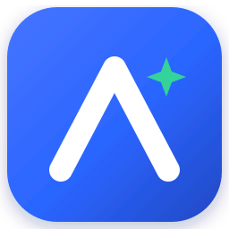
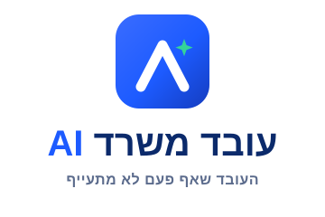
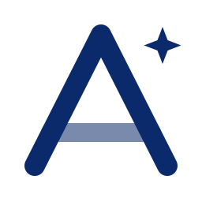
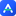
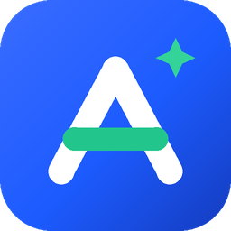
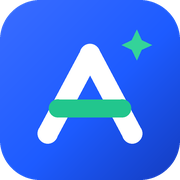
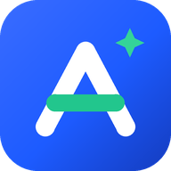

קונספט הלוגו של עובד משרד AI בנוי סביב צ׳ברון מטפס בצורת האות A — בינה מלאכותית וצמיחה — עם פס ירוק שמסמל משימה שהושלמה, וניצוץ קטן שמרמז על האינטליגנציה שמאחורי הקלעים.

שלושה רכיבים, משמעות אחת: עוזר חכם שלוקח אחריות על העבודה ומסיים אותה.
צורת ה־A העולה מייצגת בינה מלאכותית, תנופה וצמיחה — חץ שמכוון קדימה ומעלה.
הקו הירוק חוצה את הסימן כמו סימון "בוצע" — המשימה טופלה, המייל סודר, החשבונית זוהתה.
ניצוץ קטן בפינה מסמן שיש כאן חוכמה — עוזר שמבין הקשר, לא רק מבצע פקודות.
הגרסה האופקית מותאמת לכיווניות ימין־לשמאל — הסימן בצד ימin, שם המותג לצדו. לצד גרסה מוערמת לשימוש מרובע.

הסימן עובד על רקע בהיר, על רקע המותג, על כהה, וכן בגרסה חד־גונית להדפסה.


השאירו סביב הסימן מרווח פנוי בגודל הפס הירוק לפחות. הסימן נשאר קריא גם בגדלים קטנים.

16px
גדולכחול אמון דומיננטי, ירוק "בוצע" כהדגשה, ולבן/נייבי לאיזון.
Assistant לעברית, Bricolage Grotesque לכותרות תצוגה ו־Plus Jakarta Sans לטקסט לועזי.
קובצי ה־favicon נוצרו בכל הגדלים — מ־16px בלשונית הדפדפן ועד 512px למסך הבית.

iOS · 180
Android · 192לוגו (וקטור) בתיקיית brand/, וקובצי favicon ב־brand/favicons/ (גם הועתקו לשורש האתר לשימוש מיידי).
logo-mark.svg — הסימן הראשיlogo-mark-white.svg — לבן לרקע כההlogo-mark-mono.svg — חד־גוניlogo-horizontal-rtl.svg — נעילה אופקית RTLlogo-stacked.svg — נעילה מוערמתfavicon.svg · favicon.icofavicon-16/32/48.pngapple-touch-icon.png (180)android-chrome-192/512.pngsite.webmanifest · head-snippet.html